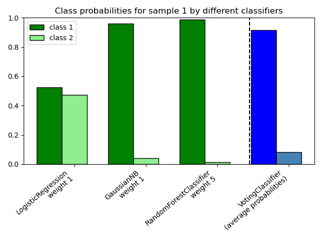

Nota
Haz clic en aquí para descargar el código de ejemplo completo o para ejecutar este ejemplo en tu navegador a través de Binder
Graficar las probabilidades de clase calculadas por el VotingClassifier¶
Graficar las probabilidades de clase de la primera muestra de un conjunto de datos de juguete predichas por tres clasificadores diferentes y promediadas por el VotingClassifier.
En primer lugar, se inicializan tres clasificadores de ejemplo (LogisticRegression, GaussianNB, y RandomForestClassifier) y se utilizan para inicializar un VotingClassifier con pesos [1, 1, 5], lo que significa que las probabilidades predichas del RandomForestClassifier cuentan 5 veces más que los pesos de los otros clasificadores cuando se calcula la probabilidad promedio.
Para visualizar la ponderación de la probabilidad, ajustamos cada clasificador en el conjunto de entrenamiento y graficamos las probabilidades de clase predichas para la primera muestra de este conjunto de datos de ejemplo.
print(__doc__)
import numpy as np
import matplotlib.pyplot as plt
from sklearn.linear_model import LogisticRegression
from sklearn.naive_bayes import GaussianNB
from sklearn.ensemble import RandomForestClassifier
from sklearn.ensemble import VotingClassifier
clf1 = LogisticRegression(max_iter=1000, random_state=123)
clf2 = RandomForestClassifier(n_estimators=100, random_state=123)
clf3 = GaussianNB()
X = np.array([[-1.0, -1.0], [-1.2, -1.4], [-3.4, -2.2], [1.1, 1.2]])
y = np.array([1, 1, 2, 2])
eclf = VotingClassifier(estimators=[('lr', clf1), ('rf', clf2), ('gnb', clf3)],
voting='soft',
weights=[1, 1, 5])
# predict class probabilities for all classifiers
probas = [c.fit(X, y).predict_proba(X) for c in (clf1, clf2, clf3, eclf)]
# get class probabilities for the first sample in the dataset
class1_1 = [pr[0, 0] for pr in probas]
class2_1 = [pr[0, 1] for pr in probas]
# plotting
N = 4 # number of groups
ind = np.arange(N) # group positions
width = 0.35 # bar width
fig, ax = plt.subplots()
# bars for classifier 1-3
p1 = ax.bar(ind, np.hstack(([class1_1[:-1], [0]])), width,
color='green', edgecolor='k')
p2 = ax.bar(ind + width, np.hstack(([class2_1[:-1], [0]])), width,
color='lightgreen', edgecolor='k')
# bars for VotingClassifier
p3 = ax.bar(ind, [0, 0, 0, class1_1[-1]], width,
color='blue', edgecolor='k')
p4 = ax.bar(ind + width, [0, 0, 0, class2_1[-1]], width,
color='steelblue', edgecolor='k')
# plot annotations
plt.axvline(2.8, color='k', linestyle='dashed')
ax.set_xticks(ind + width)
ax.set_xticklabels(['LogisticRegression\nweight 1',
'GaussianNB\nweight 1',
'RandomForestClassifier\nweight 5',
'VotingClassifier\n(average probabilities)'],
rotation=40,
ha='right')
plt.ylim([0, 1])
plt.title('Class probabilities for sample 1 by different classifiers')
plt.legend([p1[0], p2[0]], ['class 1', 'class 2'], loc='upper left')
plt.tight_layout()
plt.show()
Tiempo total de ejecución del script: (0 minutos 0.472 segundos)